The TikZ and PGF Packages
Manual for version 3.1.9a
TikZ
18 Pics: Small Pictures on Paths
18.1 Overview¶
A “pic” is a “short picture” (hence the short name…) that can be inserted anywhere in TikZ picture where you could also insert a node. Similarly to nodes, pics have a “shape” (called type to avoid confusion) that someone has defined. Each time a pic of a specified type is used, the type’s code is executed, resulting in some drawings to be added to the current picture. The syntax for adding nodes and adding pics to a picture are also very similar. The core difference is that pics are typically more complex than nodes and may consist of a whole bunch of nodes themselves together with complex paths joining them.
As a very simple example, suppose we want to define a pic type seagull that just draw “two bumps”. The code for this definition is quite easy:
The first line just tells TeX that you set some TikZ options for the current scope (which is the whole document); you could put seagull/.pic=... anywhere else where TikZ options are allowed (which is just about anywhere). We have now defined a seagull pic type and can use it as follows:
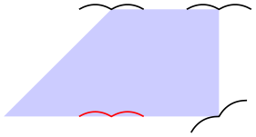
As can be see, defining new types of pics is much easier than defining new shapes for nodes; but see Section 18.3 for the fine details.
Since defining new pics types is easier than defining new node shapes and since using pics is as easy as using nodes, why should you use nodes at all? There are chiefly two reasons:
-
1. Unlike nodes, pics cannot be referenced later on. You can reference nodes that are inside a pic, but not “the pic itself”. In particular, you cannot draw lines between pics the way you can draw them between nodes. In general, whenever it makes sense that some drawing could conceivably be connected to other node-like-things, then a node is better than a pic.
-
2. If pics are used to emulate the full power of a node (which is possible, in principle), they will be slower to construct and take up more memory than a node achieving the same effect.
Despite these drawbacks, pics are an excellent choice for creating highly configurable reusable pieces of drawings that can be inserted into larger contexts.
18.2 The Pic Syntax¶
\pic ¶
Inside {tikzpicture} this is an abbreviation for \path pic.
The syntax for adding a pic to a picture is very similar to the syntax used for nodes (indeed, internally the same parser code is used). The main difference is that instead of a node contents you provide the picture’s type between the braces:
\path … pic ⟨foreach statements⟩ [⟨options⟩] (⟨prefix⟩) at(⟨coordinate⟩) :⟨animation attribute⟩={⟨options⟩} {⟨pic type⟩} …; ¶
Adds a pic to the current TikZ picture of the specified ⟨pic type⟩. The effect is, basically, that some code associated with the ⟨pic type⟩ is executed (how this works, exactly, is explained later). This code can consist of arbitrary TikZ code. As for nodes, the current path will not be modified by this path command, all drawings produced by the code are “external” to the path the same way neither a node nor its border are part of the path on which they are specified.
Just like the node command, this path operation is somewhat complex and we go over it step by step.
Order of the parts of the specification. Just like for nodes, everything between “pic” and the opening brace of the ⟨pic type⟩ is optional and can be given in any order. If there are ⟨foreach statements⟩, they must come first, directly following “pic”. As for nodes, the “end” of the pic specification is normally detected by the presence of the opening brace. You can, however, use the pic type option to specify the pic type as an option.
/tikz/pic type=⟨pic type⟩(no default) ¶
This key sets the pic type of the current pic. When this option is used inside an option block of a pic, the parsing of the pic ends immediately and no pic type in braces is expected. (In other words, this option behaves exactly like the node contents option and, indeed, the two are interchangeable.)
The location of a pic. Just like nodes, pics are placed at the last position mentioned on the path or, when at is used, at a specified position. “Placing” a pic somewhere actually means that the coordinate system is translated (shifted) to this last position. This means that inside of the pic type’s code any mentioning of the origin refers to the last position used on the path or to the specified at.
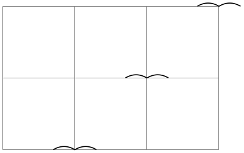
As for nodes, except for the described shifting, the coordinate system of a pic is reset prior to executing the pic type’s code. This can be changed using the transform shape option, which has the same effect as for nodes: The “outer” transformation gets applied to the node:
When the ⟨options⟩ contain transformation commands like scale or rotate, these transformations always apply to the pic:
Just like nodes, pics can also be positioned implicitly and, somewhat unsurprisingly, the same rules concerning positioning and sloping apply:
The options of a node. As always, any given ⟨options⟩ apply only to the pic and have no effect outside. As for nodes, most “outside” options also apply to the pics, but not the “action” options like draw or fill. These must be given in the ⟨options⟩ of the pic.
The code of a pic. As stated earlier, the main job of a pic is to execute some code in a scope that is shifted according to the last point on the path or to the at position specified in the pic. It was also claimed that this code is specified by the ⟨pic type⟩. However, this specification is somewhat indirect. What really happens is the following: When a pic is encountered, the current path is suspended and a new internal scope is started. The ⟨options⟩ are executed and also the ⟨pic type⟩ (as explained in a moment). After all this is done, the code stored in the following key gets executed:
/tikz/pics/code=⟨code⟩(no default) ¶
This key stores the ⟨code⟩ that should be drawn in the current pic. Normally, setting this key is done by the ⟨pic type⟩, but you can also set it in the ⟨options⟩ and leave the ⟨pic type⟩ empty:
Now, how does the ⟨pic type⟩ set pics/code? It turns out that the ⟨pic type⟩ is actually just a list of keys that are executed with the prefix /tikz/pics/. In the above examples, this “list of keys” just consisted of the single key “seagull” that did not take any arguments, but, in principle, you could provide any arbitrary text understood by \pgfkeys here. This means that when we write pic{seagull}, TikZ will execute the key /tikz/pics/seagull. It turns out, see Section 18.3, that this key is just a style set to code={\draw(-3mm,0)...;}. Thus, pic{seagull} will cause the pics/code key to be set to the text needed to draw the seagull.
Indeed, you can also use the ⟨pic type⟩ simply to set the code of the pic. This is useful for cases when you have some code that you “just want to execute, but do not want to define a new pic type”. Here is a typical example where we use pics to add some markings to a path:
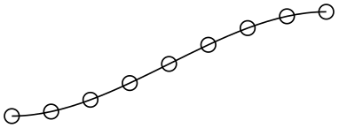
In our seagull example, we always explicitly used \draw to draw the seagull. This implies that when a user writes something pic[fill]{seagull} in the hope of having a “filled” seagull, nothing special will happen: The \draw inside the pic explicitly states that the path should be drawn, not filled, and the fact that in the surrounding scope the fill option is set has no effect. The following key can be used to change this:
/tikz/pic actions(no value) ¶
This key is a style that can be used (only) inside the code of a pic. There, it will set the “action” keys set inside the ⟨options⟩ of the pic (“actions” are drawing, filling, shading, and clipping or any combination thereof).
To see how this key works, let us define the following pic:
In the code, whether or not the circle gets drawn/filled/shaded depends on which options where given to the pic command when it is used. In contrast, the rectangle will always (just) be drawn.
 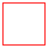
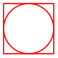
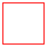
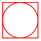
 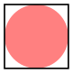
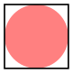
Code executed behind or in front of the path. As for nodes, a pic can be “behind” the current path or “in front of it” and, just as for nodes, the two options behind path and in front of path are used to specify which is meant. In detail, if node and pic are both used repeatedly on a path, in the resulting picture we first see all nodes and pics with the behind path option set in the order they appear on the path (nodes and pics are interchangeable in this regard), then comes the path, and then come all nodes and pics that are in front of the path in the order they appeared.
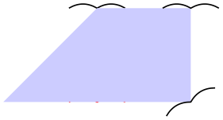
In contrast to nodes, a pic need not only be completely behind the path or in front of the path as specified by the user. Instead, a pic type may also specify that a certain part of the drawing should always be behind the path and it may specify that a certain other part should always be before the path. For this, the values of the following keys are relevant:
/tikz/pics/foreground code=⟨code⟩(no default) ¶
This key stores ⟨code⟩ that will always be drawn in front of the current path, even when behind path is used. If behind path is not used and code is (also) set, the code of code is drawn first, following by the foreground ⟨code⟩.
/tikz/pics/background code=⟨code⟩(no default) ¶
Like foreground code, only that the ⟨code⟩ is always put behind the path, except when the behind path option is applied to the pic, then the background code is drawn in front of the “behind path” code.
The foreach statement for pics. As for nodes, a pic specification may start with foreach. The effect and semantics are the same as for nodes.
Styles for pics. The following styles influence how nodes are rendered:
/tikz/every pic(style, initially empty) ¶
This style is installed at the beginning of every pic.
\begin{tikzpicture}[every pic/.style={scale=2,transform shape}]
\pic foreach
\x in
{1,2,3} at
(\x,0) {seagull};
\end{tikzpicture}
Name scopes. You can specify a ⟨name⟩ for a pic using the key name=⟨name⟩ or by giving the name in parenthesis inside the pic’s specification. The effect of this is, for once, quite different from what happens for nodes: All that happens is that name prefix is set to ⟨name⟩ at the beginning of the pic.
The name prefix key was already introduced in the description of the node command: It allows you to set some text that is prefixed to all nodes in a scope. For pics this makes particular sense: All nodes defined by a pic’s code can be referenced from outside the pic with the prefix provided.
To see how this works, let us add some nodes to the code of the seagull:
\tikzset{
seagull/.pic={
% Code for a "seagull". Do you see it?...
\coordinate (-left wing) at
(-3mm,0);
\coordinate (-head) at
(0,0);
\coordinate (-right wing) at
(3mm,0);
\draw (-left wing) to [bend left] (0,0) (-head) to [bend left] (-right wing);
}
}
Now, we can use it as follows:
Sometimes, you may also wish your pic to access nodes outside the pic (typically, because they are given as parameters). In this case, the name prefix gets in the way since the nodes outside the picture do not have this prefix. The trick is to locally reset the name prefix to the value it had outside the picture, which is achieved using the following style:
/tikz/name prefix ..(no value) ¶
This key is available only inside the code of a pic. There, it (locally) changes the name prefix to the value it had outside the pic. This allows you to access nodes outside the current pic.
Animations for pics. Just as for nodes, you can use the attribute–colon syntax to add an animation to a pic:
Naturally, you can also use animations in the code of a picture:
\begin{tikzpicture} [flapping seagull/.pic={
\draw (0,0) :path={
0s= {"{(180:3mm) to [bend left] (0,0) to [bend left] (0:3mm)}"=base},
1s= "{(160:3mm) to [bend left] (0,0) to [bend left] (20:3mm)}",
2s= "{(180:3mm) to [bend left] (0,0) to [bend left] (0:3mm)}",
repeats
};
}]
\pic :rotate={0s="0", 20s="90"} {flapping
seagull};
\pic at
(1.5,1.5) {flapping
seagull};
\end{tikzpicture}
There are two general purpose keys that pics may find useful:
/tikz/pic text=⟨text⟩(no default) ¶
This macro stores the ⟨text⟩ in the macro \tikzpictext, which is \let to \relax by default. Setting the pic text to some value is the “preferred” way of communicating a (single) piece of text that should become part of a pic (typically of a node). In particular, the quotes library maps quoted parameters to this key.
/tikz/pic text options=⟨options⟩(no default) ¶
This macro stores the ⟨options⟩ in the macro \tikzpictextoptions, which is \let to the empty string by default. The quotes library maps options for quoted parameters to this key.
18.2.1 The Quotes Syntax¶
When you load the quotes library, you can use the “quotes syntax” inside the options of a pic. Recall that for nodes this syntax is used to add a label to a node. For pics, the quotes syntax is used to set the pic text key. Whether or not the pic type’s code takes this key into consideration is, however, up to the key.
In detail, when the quotes library is loaded, each time a key–value pair in a list of options passed to an pic starts with ", the key–value pair must actually be a string of the following form:
"⟨text⟩"'⟨options⟩
This string is transformed into the following:
every pic quotes/.try,pic text=⟨text⟩, pic text options={⟨options⟩}
As example of a pic type that takes these values into account is the angle pic type:
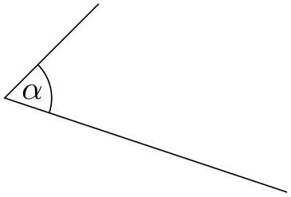
\usetikzlibrary {angles,quotes}
\tikz \draw (3,0) coordinate
(A)
--
(0,1) coordinate
(B)
--
(1,2) coordinate
(C)
pic
[draw, "$\alpha$"] {angle};
As described in Section 17.10.4, the apostrophe becomes part of the ⟨options⟩, when present. As can be seen above, the following style is executed:
/tikz/every pic quotes(style, initially empty) ¶
18.3 Defining New Pic Types¶
As explained in the description of the pic command, in order to define a new pic type you need to
-
1. define a key with the path prefix /tikz/pics that
-
2. sets the key /tikz/pics/code to the code of the pic.
It turns out that this is easy enough to achieve using styles:
Even though the above pattern is easy enough, there is a special so-called key handler that allows us to write even simpler code, namely:
Key handler ⟨key⟩/.pic=⟨some code⟩ ¶
This handler can only be used with a key with the prefix /tikz/, so you should normally use it only as an option to a TikZ command or to the \tikzset command. It takes the ⟨key⟩’s path and, inside that path, it replaces /tikz/ by /tikz/pics/ (so, basically, it adds the “missing” pics part of the path). Then, it sets up things so that the resulting name to key is a style that executes code=some code.
In almost all cases, the .pic key handler will suffice to setup keys. However, there are cases where you really need to use the first version using .style and code=:
-
• Whenever your pic type needs to set the foreground or the background code.
-
• In case of complicated arguments given to the keys.
As an example, let us define a simple pic that draws a filled circle behind the path. Furthermore, we make the circle’s radius a parameter of the pic:
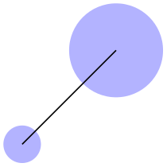